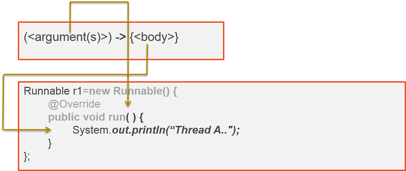
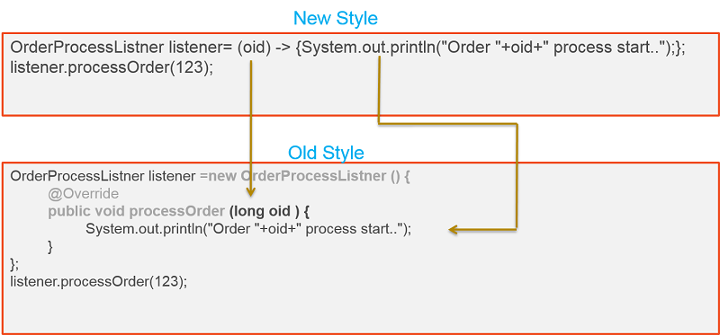

Introduction
Java is, primarily, an object object-oriented programming language. What it means, Java uses the basic principles of object-oriented and objects are first-class citizens. The message between different behaviours(methods) are passed through objects. Java 8 included some of the basic functional programming concepts to enable some of the dynamic behavioural concepts like functions are first-class and variables in functions are immutable.
J2SE 8 included JSR-335 which includes:
- Lambda expressions and method reference - This feature enabled to pass the behavior. That means we can pass the method to another method as an argument.
- Enhanced interfaces and target types
- Default and static methods in interface - This concept enables to write some default behaviour of the interface. From now onwards, Interfaces are not skeletons(abstract methods). Mind that :).
Lambda expressions also called as closures in functional programming. Closure is a function or a reference to a function together with referencing environment. Please refer through Closure to understand it better.
Functional Interface
A functional interface is an interface that has just one abstract method. Do you remember any interface which has a single method declared in it? Yes, below are some interfaces which have only one method.
So, if interface contains only one method declared in it means it's a functional interface? No. Below are the rules to say an interface as functional interface.
- Interface should be annotated with @FunctionalInterface. This annotation is introduced in J2SE 8
- Interface should have only one abstract method
Java compiler may throw a compile-time error if code violates the functional interface rule. Now, all existing interfaces which have a single abstract methods are annotated with@FunctionalInterface. If you have a de-compiler try to decompile the interfaces which have a single abstract method.
See below example for functional interface.
J2SE 8 added a new package java.util.function which contains a list of functional interfaces.
You might have few questions in mind on functional interface something like,
- How to use the functional interface?
- What is the use of functional interface?
- Why the functional interface have one abstract method?
Lambda expressions
Lambda expressions are aimed to address the vertical problem. Vertical problem means writing common lines of source code to encapsulate a single aspect of behavior. Let see this with some example. If you want to write a code in Java for thread, you may write like this,
Lambda expression is an anonymous method and the syntax looks like below.
(<argument(s)>) -> {<body>}
Where <arguments> is a list of arguments for functional interface abstract method and the <body> is a logic to hold. Below is the comparison between lambda expression syntax and anonymous class definition to understand it better,

The grayed out code in image is no more required now. We can use lambda expression only with functional interface. From J2SE 8 Runnable interface is a functional interface and by using above highlighted text in comparison diagram we can right the code like below.
Let see with other example. Below OrderProcessListener interface is a functional interface.

Expression rules
We need to follow some rules while using lambda expression.
-
Lambda expression may contains zero, one or more arguments
If there no argument we need to use empty brackets. Ex.
Runnable r1= () -> { System.out.println("Thread A.."); }If only one argument then we can use with bracket or without bracket like below,OrderProcessListener listener= (oid) -> { System.out.println("Order "+oid+" process start.."); };orOrderProcessListener listener= oid -> { System.out.println("Order "+oid+" process start.."); };If you have more than one argument we need to use bracket with comma (,) separated -
The type of the parameters can be explicitly declared or it can be inferred from the context
OrderProcessListener listener= (long oid) -> { System.out.println("Order "+oid+" process start.."); }; -
The body of the lambda expressions can contain zero, one or more statements.
If the body contains simple statement we can ignore the curly brackets({}). For example,
OrderProcessListener listener= oid -> System.out.println("Order "+oid+" process start..");
Key difference between anonymous class and Lambda expressions
- Compiler will convert the lambda expression as private method for a class but anonymous class
will generate new class. For example,
If you compile above file, two class files will be generated. One is AnonymousTest.class and another one is AnonymousTest$1.class. If you replace the above code with lambda expression like below,If you compile this code it will generate a single class OrderProcessListenerImpl.class with private method private static void lambda$0().
- Hence anonymous class generates new class, this key word refers to anonymous class. Lambda expression generate new method with in the class this key word refers to the parent class.
Iterate collection
Let's take an example before dig into the concept.
Java 8 also introduced stream framework to have more functional way to travers through collections. I will cover this in another article.